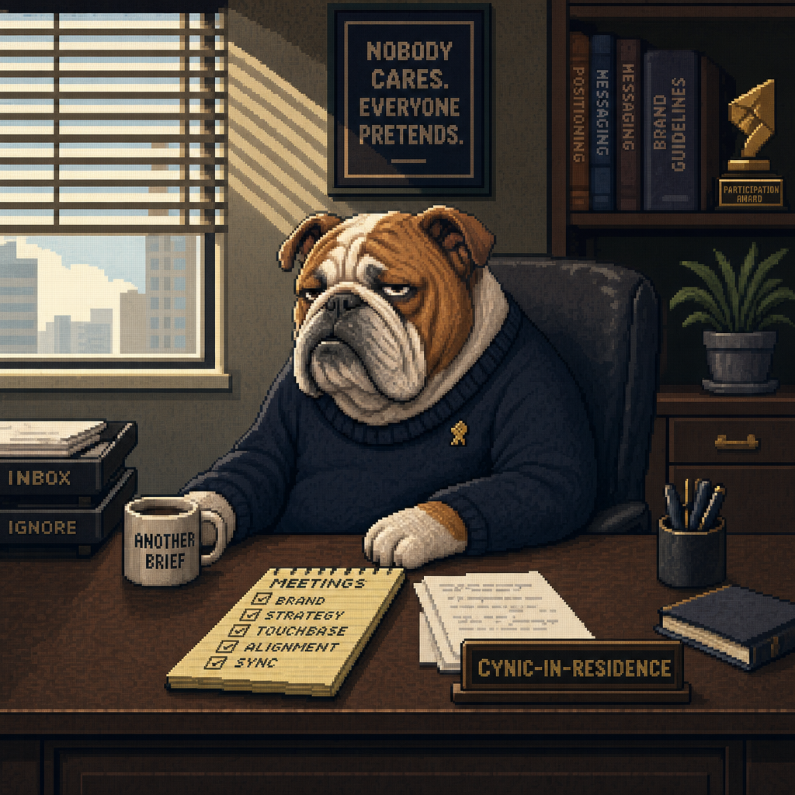

Overview
You're in production this week. Messaging locked Tuesday — Wed/Thu is recording. This page surfaces today's priorities and the docs we've built.
Status at a glance
Today — Marcel pilot recording
Confirm before you press record: messaging locked? · surrogate confirmed (George or Harmony)? · Episode 1 topic locked? · whiteboard prepped (3 boards, color convention)? · objection card printed for surrogate? · audio test on all three mics?
Open docs you'll need today
-
Survey Insights — GrowthOS Launch Quality auditN=181 raw → 92 clean (51%). Spam audit revealed 26% confirmed spam. Cleaned narrative is STRONGER. 12 real high-intent leads, not 26.→
-
Launch Video — Narrative SpineFour-beat arc from this morning's Marcel + Harmony meeting→
-
Episode 1 — Surrogate CardHand this to George/Harmony before recording→
-
Video & Content Plan — Episode 1 outlineWhiteboard layout + 5-beat arc for Marcel→
-
Marketing Week — Wed/Thu planSource doc: what's locked, what's recording→
What's in here
| Doc | Purpose | Audience |
|---|---|---|
| Video & Content Plan | Pre-read proposing two video franchises (Whiteboard Sessions, Charlie the OS Dog) + three secondary lanes | Harmony, Marcel |
| Surrogate Card | One-pager prop for the person across from Marcel in the pilot recording | George (primary) or Harmony |
| Charlie | Character sheet + marketing plan for the GrowthX bulldog franchise. Personality, voice, visual identity, prompt templates, rollout phases. | You, Harmony · for production reference |
| Marketing Week | Source doc — week-of agenda: Tue lock, Wed/Thu record, following week derivative assets | You, Harmony, Marcel |
| Launch Plan | Source doc — summary of master launch plan (objective, goals, ICP, messaging, programs, workback) | You, Harmony |
Survey Insights — GrowthOS Launch
181 raw responses became 92 LIKELY_REAL responses after an authenticity audit. The launch narrative validates on both — and actually gets stronger on the clean set. The advisor pipeline is materially smaller than the raw number suggested, and the high-intent lead list drops from 26 to 12 confirmed-real leads. Read the Response Quality Audit first; everything below should be interpreted through it.
After looking at the data row by row, 41% of the 181 responses (75 rows) are either confirmed spam or highly suspicious. The honeypot caught zero of them — these are sophisticated panel / synthetic submissions that pass naive bot checks.
What the spam looked like
Four clear contamination sources, all clustered on May 25 (the day of the 65-response spike):
- Email domain farms. 48 responses came from disposable / generated email domains:
zz.rehearsalk.com(10),*.xintaitong.com(16 across 5 subdomains),huhutu.cloud(4),tiankaixin77.xyz(5),lingeringp.com(3),youngestsd.com(2),vnaikai.life(2). Tell: short 2-3 letter random subdomain on a meaningless parent domain. All passed honeypot. - IP-cluster spam ring #1 (9 responses in 72 minutes, May 25). Single IP hash
68dd86…submitted 9 responses withfirstname{digits}@gmail.comaddresses (pabdullahi251, rebeccapaul0102, tiipantoo, juliyawilliansom, etc.). All position = "Director" or "Manager". All advisor-opted-in. All templated Q21 answers. - IP-cluster spam ring #2 (8 responses, May 25-26). Single IP hash
77b74962…cycling through @proton.me / @tuta.io / @tutamail.com with varied names (Susan Harris, Megan Sullivan, G Patterson Jr) and gaming the role multiple-choice (CEO, VP, Team Lead, Director, Manager, Growth Lead — all from one IP). - IP-cluster spam ring #3 (7 responses in 27 minutes, May 25). Single IP hash
42a228…recombining a pool of ~5 first names (Mason, James, Harry, Nico, John, Jordan) into seven differentname{digits}@gmail.comaccounts, each picking a different role. - Templated Q21 answers. Variations of "Our team is most excited about AI-powered…" and "We wish AI could move from being a 'helper' in GTM to…". One response literally opened with "Here are several different natural responses for your reference: 1…" — a model output left in by accident.
What changes when you drop the suspect rows
This is the most important table on this page:
| Metric | Full 181 | Clean 92 (LIKELY_REAL) | Junk 75 |
|---|---|---|---|
| Engineer disenchantment | 63% | 65% | 57% |
| Fragmentation pain | 64% | 77% ↑ +13pp | 43% |
| Attribution pain | 56% | 71% ↑ +15pp | 33% |
| AEO investment (top-2) | 52% | 57% | 45% |
| Advisor opt-ins | 72% (130) | 60% (55) | 91% (68) |
| Report opt-ins | 80% (144) | 86% (79) | 71% |
| High-intent leads | 26 | 12 | 14 |
| ICP fit composite | 50% | 35% | 73% |
- The narrative gets STRONGER on the clean set. Fragmentation pain jumps from 64% to 77%. Attribution pain from 56% to 71%. Spam was DILUTING the pain signal — real marketers complain more than paid panel-takers.
- The advisor pipeline is materially smaller than it looked. Junk respondents opt-in at 91% (because the panel reward is "yes please contact me"). Clean respondents opt-in at 60%. Use 55, not 130, as the real opt-in pool. 60% is still excellent.
- The ICP fit composite is the metric that lies hardest. Junk respondents claim "VP Marketing / Series A / $25-75K" at 73% because they're optimizing for what the panel thinks is the desirable profile. Real ICP fit is 35%, not 50%. Sales targeting needs to be tighter than the raw number suggests.
What to do about it
- Sales: call only the 12 LIKELY_REAL high-intent leads, not the full 26 from the raw CSV. The clean subset is derivable by cross-referencing
Survey - High Intent Leads.csvwith the LIKELY_REAL category inSurvey - Flagged Responses.csv. - Headline messaging for the launch: lead with the CLEAN numbers (77% fragmentation pain, 71% attribution pain, 60% advisor opt-in rate on real respondents). They tell a more honest, more compelling story.
- Survey form hardening — the honeypot alone is not enough. Recommend adding:
- Email-domain block list — at minimum:
xintaitong.com,rehearsalk.com,lingeringp.com,youngestsd.com,huhutu.cloud,tiankaixin77.xyz,vnaikai.life - Rate-limit by IP hash (max 1 response per IP per 24h, or require a captcha after the 2nd)
- Optional secondary verification: magic-link email confirmation before counting an opt-in as a lead
- Email-domain block list — at minimum:
- For the post-mortem: find out what drove May 25 traffic. The day was 65 responses; at least 40 of them appear to be panel/spam. If it was a paid LinkedIn campaign that got pasted into a survey-completion farm, we've been paying for spam. Worth understanding before the launch wave hits.
The flagged-row CSV (Survey - Flagged Responses.csv) has every non-LIKELY_REAL row scored 0-100 with the specific flags that fired, sortable for manual review. Re-run python3 validate_responses.py after each new export.
Bottom line
- The narrative spine is right — and gets stronger on the clean set. Every beat (false prophecy, refusal, closed-loop bet, AEO stakes) has measurable proof. Fragmentation pain rises from 64% to 77% on LIKELY_REAL, attribution pain from 56% to 71%. Use clean-set percentages on launch slides.
- The awareness needle moved off zero, but barely. In the full 181, one respondent named "GrowthOS" and one specifically called out "checkthat.ai" ("Do satellite tools by GrowthX count?"). Direct competitors mentioned: NotebookLM (11), Granola (8), AirOps (4), Cassidy, HeyMarvin, AnswerRank.ai. The launch is still the awareness event.
- Sales has 12 verified names to call this week — not 26. The audit flagged 14 of the 26 raw high-intent leads as suspicious or confirmed spam. Cross-reference
Survey - High Intent Leads.csvwith the LIKELY_REAL category inSurvey - Flagged Responses.csvbefore any outreach.
What changed: 100-row → 181-row read
| Metric | 100-row | 181-row | Direction |
|---|---|---|---|
| "Marketing Engineer" disenchantment | 62% | 63% | flat |
| Fragmentation pain | 66% | 64% | flat |
| Attribution pain | 60% | 58% | flat |
| AEO investment (top-2) | 56% | 52% | -4pp |
| Advisor opt-ins (count) | 73 | 130 | +78% |
| Report opt-ins (count) | 85 | 144 | +69% |
| ICP fit (role + stage + budget) | 50 | 91 | proportional |
| High-intent leads (raw) | 16 | 26 | +63% |
| High-intent leads (audited LIKELY_REAL) | n/a | 12 | new with v3 |
| Brand mentions (GrowthOS / CheckThat) | 0 | 2 | off zero |
The pattern: percentages held, absolute volumes roughly doubled. That's the right shape — it means the prior sample wasn't biased, just incomplete.
How the survey validates each beat of the launch narrative
Beat 1 · The false prophecy — "Marketing Engineer"
63% of respondents flagged either skill loss, tool churn, can't-hire-AI-talent, or "knowing which tools are worth it" as a top challenge. They are living inside the false prophecy.
Beat 2 · The refusal — "Marketers shouldn't have to become engineers"
This audience is primed to hear the relief. The cohort that says AI is creating "less strategic thinking" (49%) and "more editing time" (44%) is the cohort that will resonate hardest with the refusal beat.
Beat 3 · The different bet — closed-loop content system
The biggest single validation of the launch. 64% have fragmentation pain. 58% have attribution pain. The voice-of-customer quotes literally repeat the GrowthOS pitch.
Beat 4 · The new stakes — AEO / AI visibility
52% plan to invest in AI Visibility / AEO in the next 12 months — the #1 investment category, tied with marketing ops (50%) and content production at scale (49%), beating outbound (41%). And the market hasn't been won yet — only 8% report AEO as their primary inbound driver today.
57% of the market has no coherent AEO answer yet: 40% "figuring it out," 9% relying on existing SEO and assuming it carries, 8% haven't thought about it. That's the wedge. Among the 80 respondents planning AEO investment, "no tool to track it" (29%) and "budget" (28%) are the top barriers — essentially tied. They want it, they don't have the means.
Voice of the customer — the lines for slides
Q21 free-text ("what do you wish AI could do for GTM that it can't today") is the most useful field in the survey. These respondents are articulating the GrowthOS thesis without knowing it exists yet.
Where the market is on AEO
AEO strategy state
Tracking AI brand mentions
Biggest barrier to improving AI visibility (all respondents)
Among the 80 planning AEO investment specifically, the barriers shift: "no tool" (29%) and "budget" (28%) are tied at the top, then "don't know where to start" (18%).
ICP behavior — who is furthest along
Role × AEO strategy maturity
| Role | n | Defined strategy | Figuring it out |
|---|---|---|---|
| VP of Marketing | 49 | 63% | 24% |
| Growth Lead | 32 | 53% | 38% |
| Marketing Ops / RevOps | 26 | 38% | 35% |
| Content Lead | 25 | 32% | 56% |
| Founder / CEO | 30 | 27% | 50% |
| Other | 19 | 21% | 53% |
Read: VPs of Marketing are the most strategy-mature and the most tool-ready — that's the primary ICP. Growth Leads come a clean second and are a cohort to court actively. Founders are least mature; they need education before tools. Content leads are the practitioners feeling the pain most acutely.
Content / SEO spend × AEO maturity (the buying-stage indicator)
| Monthly content / SEO spend | n | % with defined AEO strategy |
|---|---|---|
| $50K+ | 20 | 75% |
| $15–50K | 44 | 66% |
| $5–15K | 42 | 50% |
| Under $5K | 55 | 17% |
| Don't track | 20 | 20% |
Read: AEO maturity scales directly with content spend. Companies already spending real money on content have already moved on AEO. The under-$5K cohort hasn't gotten there yet. Pricing tiers should reflect this distribution.
Stage × where the budget actually sits
| Stage | n | Modal monthly mkt budget |
|---|---|---|
| Bootstrapped | 45 | Under $10K (31%) |
| Seed | 51 | Under $10K (33%), then $25-75K (29%) |
| Series A | 44 | $25–75K (48%) |
| Series B-C | 24 | $25–75K (38%) |
| Series D+ | 15 | $25–75K (47%) |
Read: Series A is the highest-density paying ICP. Past the figuring-it-out phase, has urgency, has budget concentration. Series B-C and D+ also cluster cleanly at $25-75K. Bootstrapped and seed are most numerous but lowest spend per company — they're the report / community / playbook audience, not the immediate buyer.
Competitive landscape (from Q10 — "tools you're excited about")
Direct / adjacent tools mentioned (full 181)
- NotebookLM — 11 mentions. The clear plurality. Research and synthesis. Not a direct competitor but the workflow they're already using.
- Granola — 8 mentions. Meeting notes + early ABM lead scoring.
- AirOps — 4 mentions, one specifically for AEO workflow ("content review to ensure keywords are utilized to bolster our AEO strategy"). Closest direct competitor in the data.
- Cassidy, HeyMarvin, AnswerRank.ai — 1 mention each
- n8n, Zapier+AI, Clay, 11x.ai, Lindy — sporadic, workflow / automation adjacent
- Many generic mentions of "AI-native GTM tools", "agentic workflows", "end-to-end GTM execution"
Foundation tools dominating mindshare
- GrowthOS: 1 mention (named directly as a tool they're excited about)
- CheckThat: 1 mention ("Do satellite tools by GrowthX count? I've found checkthat.ai and it's now in my research stack")
- ContentOS: 0
That's it. The needle moved off zero but barely. The launch is still the awareness event — the market is hungry for what we describe and has effectively not heard of us yet.
Data quality caveats — read before sharing any number
The Response Quality Audit at the top of this page is the primary data quality story. These are the remaining caveats that survive after the audit.
- The audit is heuristic, not perfect. The 92 LIKELY_REAL rows are conservative — a few of them are probably also panel-spam I haven't yet caught (and a few of the 14 UNCERTAIN rows are probably legit but incomplete). Treat the audit categories as a strong prior, not a final answer. Spot-check the lead CSV manually before any individual outreach.
- UTM coverage is poor. Only 22% (39/181) have a known UTM source (all LinkedIn). The other 78% lack source attribution. Add UTM enforcement on every distribution link before the launch wave.
- May 25 spike investigation is the #1 follow-up. 65 responses on May 25, 38 on May 26 — 57% of the sample in two days. The audit shows ~40 of those 103 are panel/spam. Find out what drove the May 25 traffic. If we're paying for spam, kill that channel before the launch wave.
- The sample is self-selected. Anyone who finished 27 questions about AI in GTM is more AI-engaged than the average marketer. Adjust the absolute pain percentages downward when generalizing.
- Honeypot caught nothing. 100% pass rate but 26% of the responses are confirmed spam. The current bot detection on the survey form is not effective against panel/operator-driven submissions. See the audit section's "What to do about it" for hardening recommendations.
Recommended actions for launch
This week (pre-launch)
- Sales: contact only the 12 LIKELY_REAL high-intent leads (cross-reference
Survey - High Intent Leads.csvagainst the LIKELY_REAL rows inSurvey - Flagged Responses.csv). Personalize each intro with the respondent's survey answer. Do not call the SUSPICIOUS or CONFIRMED_SPAM rows. - Investigate the May 25 spike source. If it was paid LinkedIn or a panel buy, recalibrate the headline read. If it was organic / a viral post, double down on whoever posted.
- Content: publish a teaser social post using one specific stat — "63% of marketers we surveyed said they're losing core skills to AI tool sprawl. We don't think marketers should have to become engineers." Pin as launch lead-in.
- Engineering / RevOps: add UTM enforcement on every distribution link so the launch-week response wave is attributable.
Launch week
- Use the survey as the launch press hook. "181 marketing leaders told us..." is a stronger angle than "we built a thing." By Monday it'll likely be 200+; lead with the cleaner round number then.
- Ship the AEO Playbook as the launch lead magnet. 22% don't know where to start + 52% planning AEO investment + 25% have no tool to track it = obvious download intent.
- Run the launch announcement through the known-LinkedIn sample first before paid amplification — they already raised their hand. 39 known LinkedIn referrals × 144 report opt-ins overlap = warm sequence ready.
Post-launch
- Re-run
analyze_survey.pyANDvalidate_responses.pyweekly through end of June. Watch whether the LIKELY_REAL lead cohort converts to demo or waitlist. - Add 3-5 product-fit questions to Phase 2 of the survey. Current survey is rich on context but light on "would you buy this." Test a closing question like "If a tool did [GrowthOS pitch], would you take a demo this quarter?"
Files in this analysis bundle
| File | What it is |
|---|---|
Survey Insights - GrowthOS Launch.md | This page in markdown form — Notion-ready |
Survey - High Intent Leads.csv | 26 advisor-opted-in high-intent leads with off-ICP-flag column. Filter to LIKELY_REAL for sales (kept out of git; PII) |
Survey - Flagged Responses.csv | All 89 non-LIKELY_REAL rows sorted by suspicion score, with the specific flags that fired (kept out of git; PII) |
analyze_survey.py | Reproducible analysis script. Run python3 analyze_survey.py from this folder to refresh. |
validate_responses.py | Authenticity audit. Run after every fresh export to regenerate the flagged-rows CSV. |
Launch Video — Narrative Spine
The central story for the launch video. Every other piece of launch content — whiteboard sessions, social cuts, eventually Charlie — should ladder up to or reference this spine.
The four-beat arc
The false prophecy
"You need to become a Marketing Engineer." The industry is telling marketers they need to build agents, manage a sprawling AI Stack, become technical.
The refusal
We don't think marketers need to become engineers.
The different bet
We built a platform that leverages frontier technology in a closed-loop system, so you can scale content without becoming a tools company.
The new stakes
Agents are searching the web. Your site is your visibility surface in the AEO marketplace. Scale or disappear.
What each beat is doing
Beat 1 — Name the lazy consensus before it names us
"Marketing Engineer" is a real, in-the-wild term. The "AI Stack" is a real, in-the-wild buzzword. This beat lands only if the viewer recognizes the description immediately — so we need receipts on screen: actual job postings, actual stack diagrams, actual tweets.
Beat 2 — Plant the flag
Short, declarative, founder-voiced. This is the pivot from describing the world to taking a stance.
"You don't need to become an engineer" can sound dismissive of marketers who want to upskill. Frame it as relief, not criticism — you shouldn't have to.
Beat 3 — Offer the different bet
"Closed-loop system" is doing heavy lifting. For an audience seeing GrowthOS for the first time, this phrase doesn't land on its own. It needs a one-sentence definition or a visual.
Beat 4 — Redefine the stakes so our bet is the only sensible bet
AEO is the hinge. The bet on this beat is that the viewer either already feels the AEO shift, or we make them feel it in a few seconds. Instinct: skip the acronym, use the picture — "When buyers ask ChatGPT, your website is what the agent reads."
Tone & voice
- Founder-voiced (Marcel), not narrator-voiced
- Direct, slightly contrarian, not defensive
- We are not selling tools — we are selling a position
What this video is NOT
- Not a product demo — that's downstream
- Not a "future of marketing" think-piece
- Not a how-to — the whiteboard sessions are the how
It's a positioning shot — name the wave, plant the flag.
Open questions to lock with Marcel + Harmony
- "Closed-loop system" — what's our visual or one-line definition for someone seeing it for the first time?
- AEO — define the acronym in-video, or skip it and lead with the picture?
- CTA / closing beat — does the video end on the stakes, or land on a specific invitation (waitlist, demo, "see how it works")?
- Receipts for Beat 1 — comfortable putting real screenshots of industry / competitor messaging on screen, or do we paraphrase to avoid naming names?
How this fits the rest of the launch
| Asset | Role relative to the spine |
|---|---|
| This video | The spine. Plays on homepage hero. Cut into a :30 and a :15 for social. |
| Whiteboard Sessions with Marcel | The "okay, show me" companion. Long-form. Picks up where the spine leaves off. See Video & Content Plan. |
| Social cuts | Each beat is its own post. Beat 1 alone is a thread. Beat 4 alone is a manifesto post. |
| Charlie (post-launch) | Ladders to the same position from a different angle — the marketer who refuses to drown in tools. See Charlie. |
Production status
V2 Script · 90-second Marcel cut Total rewrite · Wed PM
Total rewrite after V1 was flagged as too generic. Rebuilt from a deeper voice study (CheckThat launch transcript, website VSL, six recent LinkedIn posts) and a research pass on what's working in 2026 founder-led launch videos. The full deliverable — diagnosis of what V1 got wrong, research synthesis, annotated script with delivery notes, alternate openers and closes, and B-roll plan — lives in Launch Video - 90s Script - Marcel V2.md. V1 is preserved at Launch Video - 90s Script - Marcel V1.md for the diff.
"Hey, what's up everyone, Marcel here.
I had a call yesterday with a CMO. She pulls up her Notion and shows me her 'AI stack.' Twelve tools. Eleven grand a month. I asked her: 'Has any of this moved your pipeline?'
She just laughed."
"This is what they're telling marketers right now: to keep your job, you need to become a 'Marketing Engineer.' Learn the APIs. Build the agents. Wire up the stack.
I think it's the dumbest pitch in B2B right now."
"Marketers shouldn't have to become engineers. They should have a system that already DID the engineering.
That's what we built. ContentOS. We wired the best frontier AI into a closed-loop content system. Research, planning, drafting, optimization — end to end. You bring the strategy. You bring the taste. The system does the rest."
"Your buyers stopped Googling. Right now, today, an AI agent is reading the web for them, building shortlists before you even know they're in market. They might never land on your homepage. And if they do, your homepage isn't your homepage anymore. It's how AI describes you to the room.
Brands that publish trustworthy content at scale own this. Everyone else disappears."
"I'm letting a small group into ContentOS early. Comment 'OS' below and I'll DM you personally. Talk soon."
227 words · ~83–90 sec depending on pause placement
Why V2 sounds like Marcel and V1 didn't
- Opens with a SCENE, not a claim. A specific CMO, a specific Notion page, a specific dollar number, ending on a specific human reaction ("She just laughed"). V1 opened with a manifesto. Modern launch videos open with a moment.
- The inversion is the headline, not a buried line. "Marketers shouldn't have to become engineers. They should have a system that already DID the engineering." That's the screenshot. Every other line is in service of landing it.
- "Wired" is a callback, not a coincidence. The consensus beat says "Wire up the stack." The flip beat says "We wired the best frontier AI into a closed-loop content system." Marcel just said "we did the wiring so you don't have to" without saying it.
- ONE customer-shaped moment, not a list of names. V1 listed five brands in one sentence as receipts; V2 spends those same words on one specific person and her actual reaction. The single-scene version hits harder in 90 seconds.
- Stakes get ONE picture, not three escalations. "An AI agent is reading the web for them, building shortlists before you even know they're in market." That's the line. V2 doesn't try to top it.
- The CTA is Marcel's actual CheckThat pattern. Personal offer + low-friction trigger ("comment OS") + scarcity ("small group") + warm close ("Talk soon"). V1's "Drop a comment for early access" could have been any SaaS launch.
- The word "leverage" appears zero times. So does "introducing," "we're excited to announce," and any other corporate softener.
Video & Content Expansion
For Tuesday's lock-down session. Production options I can execute Wed/Thu (and the following week) once messaging is finalized.
Why I'm proposing this
The website is sharp and the launch programs are well-scoped, but the content engine post-launch is going to live or die on two things: explaining why GrowthOS is different from the noise (the GitHub repos, agent skills, and "marketing OS" wrappers flooding the market) and getting eyeballs back on us continuously so the message has time to land.
The most effective way to do that — and the most realistic for our team size — is to greenlight two flagship video franchises that work in opposite directions of the funnel and feed every other channel.
- The Whiteboard Sessions with Marcel — long-form explainer that lives on YouTube + podcast feeds + sales send-aheads.
- Charlie the OS Dog — generative-AI short-form, GrowthX-adjacent, designed to be shared and replied-to. Wendy's-style brand voice with our mascot doing the talking.
Greenlighting both Tuesday means I shoot the long-form (Marcel) on Wed/Thu and I prototype the first 3 Charlie clips next week while Seedance, Kling, and Veo renders run in the background.
Messaging won't be locked until Tuesday's session. None of the on-camera content below should be recorded before that lock. The shoot plan assumes a Tuesday-EOD lock so Wed/Thu can execute.
Franchise 1: The Whiteboard Sessions
The format
Marcel teaches one big idea per episode. Across from him is a surrogate — someone who stands in for our ICP buyer (Head of Content, Sr. SEO, CMO). They're not pretending to be a journalist or a co-host. They're the person on the other side of a sales call who genuinely doesn't know GrowthOS yet and is asking the questions every real prospect asks.
A real whiteboard is the third character. Marcel draws the system as he explains it. The viewer leaves with both a mental model AND a screenshot-worthy artifact.
Why this works
- It's the sales call, made public. Every objection a prospect raises in a demo gets addressed publicly, which compresses our cycle.
- It produces proof of expertise, not pitch. Marcel's whiteboard is the moat.
- The whiteboard frames generate a static visual asset (Twitter card, LinkedIn carousel, deck slide) for free, every episode.
- The format is defensible against AI slop. Anyone can spin up a SaaS thought-leadership podcast. Almost no one can put a founder on camera who can teach a system live.
- It builds a flywheel: every episode answers a question that becomes a blog post, a sales enablement send-ahead, and a paid ad angle.
Reference points
- Y Combinator's How to Build the Future
- Acquired podcast (narrative clarity over flash)
- David Perell's writing breakdowns
- Tim Ferriss' Naval whiteboard session
- Any Masters of Scale moment where Reid Hoffman interrupts to sketch the model
Surrogate options
I'm running production both days, so I can't be in the chair. Need someone who can ask the questions a real prospect would ask — credibly, on camera, with minimal prep. Pick one and stick with it for the season — recurring chemistry is the moat.
| Option | Pros | Cons |
|---|---|---|
| George | Works with our customers daily, knows real questions and objections cold, internal but credible | Need to confirm comfort on camera + prep time before Wednesday |
| Harmony | Sharp marketing peer, natural chemistry with Marcel, fastest to lock | Already on camera in other launch assets — risks insular feel over a season |
| A friendly customer (rotating) | Highest credibility, real ICP voice, customer logo each episode | Coordination cost, NDA/approvals, hard to lock by Wednesday |
| External host (a creator we pay) | Built-in audience, polished delivery | Cost, scheduling, less authentic for a pilot |
George for the pilot. He talks to our buyers every week, so the questions he asks Marcel will mirror the questions Marcel actually has to answer on a real sales call. Harmony is the strong backup if George isn't available or comfortable. Move to customer-as-surrogate on episode 3–4 once we know the format works.
Episode 1–3 topic options (lock 1 Tuesday)
- "What 'Growth OS' actually means" — Marcel maps the six primitives on the whiteboard from scratch. The definitional episode. Best as Episode 1.
- "Why your agency keeps resetting" — The compounding intelligence argument visualized. Strong wedge against agency RFPs.
- "What AEO actually changes about your content strategy" — Anchored in the AI Visibility engine. Most timely topic.
- "The five things that break when you scale content with AI" — Operator-focused, less hype, lots of permission to be honest.
- "How we audit a website in 30 minutes" — Marcel does it live on a real (consented) site. Closest thing to a free sales call.
Episode 1 — light outline + whiteboard layout
Deliberately under-baked. Messaging isn't locked until Tuesday, so this is a structure for Marcel to fill, not a script.
Working title: What a Growth OS Actually Is
Length: ~20-min cut from ~60–75 min raw.
Single goal of the episode: The surrogate (and the viewer) leaves understanding why GrowthOS is a system rather than another tool, and why the system compounds while a tool stack resets.
Whiteboard layout — three boards, left to right
- Left board — "The Status Quo." Marcel draws the fragmented stack as a row of disconnected boxes: SEO tool, content optimizer, agency, analytics, AI writer. Lines that don't connect. Tally up the monthly cost. The visual point: it's a graveyard, not a system.
- Middle board — "What 'Growth OS' Means." Marcel erases the boxes and re-draws the same surface as a closed loop, labeling each node with one of the primitives from the site: Context, Pages, Opportunities, Agents, Signals, Snapshots. He draws arrows showing how each one feeds the next.
- Right board — "Why It Compounds." Marcel sketches a simple Q1 → Q2 → Q3 progression showing how each pass through the loop is smarter than the last. Contrast: agency resets to zero on a new engagement; GrowthOS keeps every prior cycle of context.
The board itself becomes the hero static asset for the episode (LinkedIn carousel, Twitter card, deck slide).
Five-beat conversational arc
- Open (1–2 min). Surrogate: "Marcel, what are you drawing for me today?" Marcel sets the stake in one sentence.
- The old way is broken (5–7 min). Surrogate walks through their own current stack out loud. Marcel diagnoses on the left board as they talk.
- What changes (8–10 min). Marcel moves to the middle board, introduces primitives one at a time. Surrogate pushes back on each.
- The compounding payoff (5–7 min). Marcel moves to the right board. Surrogate asks for proof. Marcel cites real customer trajectories.
- Close (3–5 min). Surrogate: "OK — what would I actually do tomorrow?" Marcel gives 2–3 concrete next moves.
Things I will NOT pre-write before Tuesday
- The cold open / hook
- Any specific positioning language
- The category name Marcel uses on board 2
- Customer-name proof points until we confirm what's referenceable
Things I WILL prep Tuesday night
- The objection card for the surrogate (see Surrogate Card)
- The whiteboard color convention (primitives in one color, signals/connections in another, costs in a third)
- A printed cheat-sheet for Marcel with the five beats and the right-board "compounding" framing
Production needs (Wed/Thu)
- Real whiteboard, locked-off wide camera + close-up camera on the board
- Marcel mic'd, surrogate mic'd, room mic for backup
- Desk/doc cam on any printed reference Marcel pulls in
- ~75 min of recording per episode → 20-min cut + 6–10 short-form pulls
- I can shoot 2 pilot episodes across the two days if topics are locked Tuesday night
Distribution
- Full episode: YouTube + Spotify + Apple Podcasts
- 20-min cut: embed on growthx.com under a new
/libraryor/sessionspage - Whiteboard photograph: standalone LinkedIn carousel ("Marcel drew this in 8 minutes")
- 6–10 short-form pulls: LinkedIn, X, and TikTok if we spin one up
- Sales: every episode becomes a send-ahead — "watch this 6-min clip before our call"
Franchise 2: Charlie the OS Dog
The concept
Charlie, the GrowthX English bulldog, has Opinions about marketing. He's senior, tired, has seen every trend cycle, and runs an "OS" for marketers without ever needing to attend a single meeting. We use Seedance 2.0, Kling 3.0, Veo, and Google Omni to put Charlie in absurd, sharply observed situations that any marketer would recognize.
We're not selling GrowthOS in the clips. We're building a character marketers want to follow. The Wendy's principle: the content isn't about the product, it's about the personality. The product benefits because the personality lives on a feed people already trust.
Why this works for us specifically
- The category we're entering ("Growth OS," "AI growth infrastructure," etc.) is flooded with serious, indistinguishable thought-leadership content. A character voice cuts through that immediately.
- Charlie predates GrowthOS, which means we already have brand equity — we're not inventing a mascot from scratch.
- Gen-AI video has dropped the cost of producing this kind of content by ~100x. Before generative video, this would have required a 3D animator. Now it's a Wednesday afternoon.
- Reply-game potential — Charlie can be a quote-tweet/DM character, not just a post-on-the-feed character.
Reference brand voices
- Wendy's — savagery in service of fans
- Duolingo — owl as unhinged but lovable mascot, brand-safe weirdness
- Liquid Death — marketing-first, product-incidental
- Aviation Gin / Mint Mobile — character (Reynolds) is the funnel
- Surreal Cereal — copy-driven, low-production, high-personality
- MSCHF — drops, stunts, cultural moments
The shared lesson: distinct character + consistent voice + cadence beats budget every time.
Content pillars (lock 3–4 on Tuesday)
- "Charlie reviews the stack" — POV: Charlie evaluates a marketing tool. Always disappointed.
- "A day in the life of Charlie, CMO" — Charlie wears a tiny blazer, runs a "meeting," signs off on a quarterly plan, naps.
- "Charlie reacts to bad marketing tweets" — Bulldog reactions cut over screenshotted hot takes. Pure reply-game ammo.
- "Charlie's content audit" — Charlie stares at a blog post, judges silently, walks away.
- "Charlie + Marcel" — Recurring odd-couple bit where Marcel explains something serious and Charlie is unimpressed.
Tooling map
- Seedance 2.0 — Lip-sync and short-form motion. For dialogue or talking-Charlie bits.
- Kling 3.0 — Transitions, surreal/dream sequences, physics-y comedy beats.
- Veo — Highest fidelity narrative shots and hero clips.
- Google Omni — Multimodal scene composition and world-consistent backgrounds.
- All four: reference-image consistency from a curated Charlie character sheet I'll build Wed.
Cadence + format
- 2 posts per week minimum: an evergreen library piece + 1 reactive piece
- 15–30 seconds each, vertical, captioned
- No paid spend at first — pure organic to find which formats hit
- Cross-post: LinkedIn corporate, X corporate, Marcel's personal X, dedicated Charlie handles (TBD)
Risks + guardrails
- Charlie cannot punch down at customers, name real competitors directly, or punch at anyone's job
- One person owns voice consistency — proposing Harmony + me as the review pair
- We test 5–10 clips quietly on Marcel's personal account before launching as a corporate franchise
- Charlie launches AFTER the main GrowthOS launch, not concurrent — so we don't dilute the core message in launch week
Three more lanes that fall out of the same shoots
A. The Six Primitives Explainer Series
One 60–90 second video per primitive (Context, Pages, Opportunities, Agents, Signals, Snapshots). Marcel does each on the whiteboard in a single take. Six videos shot in one afternoon. Each lives on its respective product page.
B. Customer Documentary Shorts
3–5 min mini-docs on 2 lighthouse customers (Vercel, Lovable, etc.). Pure proof. We use them in sales, on the homepage, and as standalone YouTube content. Won't shoot Wed/Thu — schedule for the following week.
C. The Compounding Audit
Marcel-led, live (or recorded-as-live), public website audits using GrowthOS as the lens. Monthly cadence. Sponsor-able down the road. Closest analog: Levels.fyi salary teardowns or Marketing Examples breakdowns, but for content portfolios.
What I need from Tuesday in order to ship Wed/Thu
| Decision | Why I need it before Wednesday |
|---|---|
| Greenlight on The Whiteboard Sessions (yes/no + Episode 1 topic) | So I can lock Marcel's prep + the whiteboard layout Tuesday night |
| Surrogate decision (George or Harmony for the pilot) | I'm on production both days, so I can't be in the chair — need to confirm George by EOD Tuesday so he can prep, Harmony as the backup |
| Greenlight on Charlie franchise (yes/no + which 3 pillars) | So I can spend Wed afternoon building the character reference sheets and start renders |
| Voice/tone bounds for Charlie | So we don't end up with a re-review cycle on every post |
| Lock on the "what category are we in" line | So Marcel's Episode 1 whiteboard isn't outdated by Friday |
What I'll have ready by EOD Thursday if we lock the above
- 1–2 Whiteboard Sessions episodes, fully recorded (rough cuts following week)
- Six Primitives short-form set, fully recorded
- Charlie character reference sheet + 3 prototype clips for internal review (not for publishing yet)
- All B-roll we need (Marcel at desk, office, hands on whiteboard) for short-form pulls across the entire launch
Open questions for you and Marcel
- Do we have a budget line for any of this beyond my time and existing tool access, or are we strict zero-vendor on launch content?
- Is Marcel open to a recurring on-camera commitment (e.g., monthly), or do we treat the Whiteboard Sessions as a one-shot pilot we evaluate before committing?
- Where do we want Charlie to live distribution-wise — under the GrowthX corporate handles, or as a separate handle (@CharlieTheBulldog or similar)?
- Can we lock George (or Harmony) as the pilot surrogate before EOD Tuesday so they have time to prep? And are there customers I can quietly start reaching out to for Episode 3's surrogate seat, or do you want to own that outreach?
- Do we want to align the Charlie launch with any specific moment (Product Hunt day, post-launch week, July kickoff), or just start when the content is good?
Episode 1 — Surrogate Card
Whiteboard Sessions — What a Growth OS Actually Is
Your one job
Be the buyer on the other side of a sales call. Stay genuinely curious. Don't interview — react. If Marcel says something you wouldn't accept at face value on a real call, push back.
The five beats — what you're doing in each
- Open (1–2 min). Cue Marcel with: "What are you drawing for me today?" Then shut up.
- The old way is broken (5–7 min). Walk Marcel through a current stack out loud — be specific, name real tools, name a monthly cost. Let him diagnose as he draws on the left board. Don't help him.
- What changes (8–10 min). Marcel introduces primitives one at a time on the middle board. Push back on every single one. Don't let him move on until you'd be satisfied if he said this to you in a real demo.
- The compounding payoff (5–7 min). Ask for proof. "Show me what month 6 looks like vs. month 1. Who's actually done that?" Make him cite real customer trajectories.
- Close (3–5 min). Land with: "OK — what would I actually do tomorrow?" Make him give you 2–3 concrete moves, not a manifesto.
The five must-ask objections
These have to get answered on tape, even if Marcel doesn't volunteer them.
- "How is this different from Ahrefs / Clearscope / our agency?"
Use whichever tools match your real comparison set. - "How is this different from a GPT wrapper, an agent skill, or a GitHub repo my team could build in a week?"
The AI-slop objection. Most important one. - "What does my team actually own day-to-day if your system is doing this?"
The am I being automated objection. - "What's the catch — where does this NOT work?"
Force a real answer. Don't accept "it works for everyone." - "If I'm just here for AI visibility, do I need the rest of it?"
The unbundling question.
If Marcel uses jargon
Stop him. "Wait — say that in English." Every time. The viewer needs this more than Marcel realizes.
Don'ts
- Don't be a journalist. You're not neutral — you're skeptical.
- Don't help him finish a sentence.
- Don't agree just to keep things moving. Disagreement is the moat.
- Don't reference internal GrowthX context (team names, internal projects). You're a stand-in for a buyer.
If you get off track, reset with one of these
- "Bring me back to the whiteboard."
- "Pretend I'm hearing this for the first time."
- "Pretend I have $20K/month already in this category and one quarter to prove it works."
Print at 100%. One page. Hold this off-camera — don't read from it, glance.
Charlie — The OS Dog
Character sheet and rollout plan for the generative-AI short-form franchise. Built to keep voice consistent across every clip, every render, every channel — no matter who's producing.
A working draft. Locks the things that should be locked (personality, tonal range, settings, do/don't) and clearly flags what's still in motion (real reference photos, distribution handle, launch timing).
Identity
Name: Charlie
Species: English Bulldog
Age in fiction: Senior. Gray muzzle. World-weary.
Title in fiction: CMO Emeritus. Runs an OS without ever attending a meeting.
Origin: The actual GrowthX mascot, repositioned for the GrowthOS era.
Charlie is the Larry David of marketing dogs. He's not here to be cute. He's here to react to the absurdity of how marketing actually works. The product benefit lives in the silence after the reaction.
Personality
- Senior. Has seen every trend cycle. Bored before the trend starts.
- Skeptical without being mean. He doesn't dunk. He just looks at you until you realize.
- Opinionated, but rarely speaks. The look IS the take.
- Observational, not aspirational. Charlie is not the hero of his content — the absurdity is. He's the witness.
- Never sells. Charlie never mentions GrowthOS, ContentOS, GrowthX, or any product name. He's an adjacent character, not an ad.
Voice
Charlie is 90% silent. His reactions do the talking. When he does "speak" (text overlay, thought bubble, AI voiceover), it's one short observation. Dry. No exclamation marks. Never finishes a thought he doesn't have to.
Catchphrase candidates to test:
- "Mm." — the universal Charlie response
- "Bark." — his rating system. One bark to five. He never gives five.
- "Pass." — text overlay after he stares at something for a beat too long
- "Hmm." — the soft no
Visual identity
The dog himself
The real Charlie is the source of truth. Once we have a reference photo set (front, side, 3/4 left, 3/4 right, expressions at rest, expressions alert), every render gets locked to his actual coat, jowl shape, eye color, and signature look.
I need 6–12 reference photos of the real Charlie from existing GrowthX content before we move to production renders. For prototyping right now we can use a generic senior English bulldog with the right vibe — but production must lock to the real dog.
Style direction — pick a lane
Same subject (hero portrait, slight scowl, weary expression), rendered in ten distinct visual styles. The choice here cascades into every future Charlie render — wardrobe, settings, even the comedic register changes per style. Click any image to open it full-size.
Styles 01–05 were rendered with a fast prototyping tool. Styles 06–10 are gpt-image-2 production quality. If you want apples-to-apples I can re-render 01–05 at gpt-image-2 quality too (~$1.05 additional). The franchise's production renders will all come from gpt-image-2 regardless of which lane you pick.
Photo-real
"A real dog who happens to be in a sweater." Documentary credibility — humor has to come from the situation, not the style.
Pixar 3D
Highest production-value feel. Reads as a "character" instantly — but leans cute and kid-adjacent, which can undercut B2B credibility.
Aardman claymation
Dry British comedy baked into the medium. Almost no B2B brand uses this — the format itself says "we don't take ourselves too seriously."
2D vector
Friendly, modern, shareable. Cheapest path to motion. Risk: crowded — many B2B brands have landed in this lane.
Comic / graphic novel
Most personality-forward of the lot. Strongest as static — LinkedIn carousels, deck slides, blog headers. Hard to animate.
Felt puppet
Tactile, handmade warmth — the Muppets / Sesame Street lane. Softer and friendlier than claymation; decades of audience trust baked in.
Studio Ghibli watercolor
Hand-painted Miyazaki feel. Rare in B2B. Risk: the soft painterly tone may undercut Charlie's dry skepticism — he reads gentle, not weary.
Anime / cel-shaded
Bold shonen energy. Charlie as the intense protagonist of his own series. Hilarious as a one-off; could feel try-hard as the default lane.

16-bit pixel art
SNES-era sprite. Instantly nostalgic and shareable. Tradeoff: faces collapse to a few pixels — emotional range narrows considerably.
Mid-century flat
Vintage editorial style. Designer-y, sophisticated. Functions more as a logo system than a character — Charlie becomes an icon, not a personality.
Based on what's visible so far: lead with 03 (Aardman claymation) for hero clips and 01 (photo-real) for reactive reply-game posts. Will revise after the felt puppet (06) renders — that's the strongest competitor to Aardman in the "tactile handmade character" lane and could win on accessibility/warmth.
Wardrobe
Tiny accessories that signal his "role" without putting him in costume. Quiet. Believable.
- Small black blazer lapel pin (eventually the GrowthX mark)
- Bluetooth earpiece — almost too small to see
- Reading glasses balanced on top of his head, not on his nose
- Office badge on a thin lanyard
- Occasionally: a tiny blazer over the shoulders (use sparingly — costume-y if overused)
Settings — Charlie's world
Charlie lives in marketing's natural habitats. Indoor, lit by office light or screen glow. Outdoor moments are rare and always in transit (commute, coffee, errand). Never in a park. Never on a beach.
- The desk. A leather chair he barely fits in. Laptop. Coffee. Calendar on the wall.
- The conference room. Long table. Empty chairs. A whiteboard covered in marketing acronyms.
- The kitchen / break room. Coffee machine. Free snacks. Nobody around.
- The coffee shop. Sitting across from an empty chair. Espresso untouched.
- The commute. Outside an unmarked office building, badge on, slightly weary.
- The screen-share. Looking directly into a webcam. Bluetooth earpiece. The Zoom POV.
Tonal range
| Do | Don't |
|---|---|
| Bored, smug, unimpressed, mock-attentive, asleep mid-meeting, judgmental, quietly sympathetic | Angry, sad, hurt, scared, aggressive, manic, "cute" |
| Office, conference room, coffee shop, commute, screen-share | Park, beach, dog show, fields, "outdoor adventure" framing |
| Looking directly into the camera — the silent take | Looking at another dog, another person, or a treat |
| Dry, observational, low-volume comedy | Voiceover narrating jokes; on-the-nose punchlines |
| Punch up at the category (marketing's noise) and the status quo (broken stacks, agency theater) | Punch down at customers, real competitors by name, or anyone's job |
Visual reference set
Six foundational scenes. Each is a deliberate piece of Charlie's world. Once renders are approved, these lock visual consistency across the entire franchise — every future clip cites this set as its reference.
01 · Hero portrait
Studio-quality portrait of a senior English bulldog with a slight scowl, looking directly into camera. Soft warm office lighting, slight depth of field. Wearing a small black blazer lapel pin. Neutral office background slightly out of focus. Photographic, not stylized.
02 · At the desk
Wide shot of a senior English bulldog sitting in a leather office chair, paws resting on a desk in front of a closed MacBook. Cluttered desk with a coffee cup and a framed photo. He stares unimpressed at the laptop. Natural office light. Empty office around him. Mundane, dry tone.
03 · Asleep in the conference room
Senior English bulldog asleep at the end of a long empty conference room table. Empty chairs around the table. A whiteboard in the background covered in marketing acronyms. Fluorescent office light. Wide and still. Slightly absurd, slightly sad.
04 · The reaction
Tight close-up on a senior English bulldog's face. He side-eyes the camera with a mock-shocked expression — eyes wide, jowls slightly raised. Soft natural light, neutral background. Expression reads as "I cannot believe what I just saw."
05 · The commute
Senior English bulldog standing on a sidewalk outside an unmarked office building. Tiny work badge on a thin lanyard around his neck. Light rain. Morning. He looks down at the sidewalk, weary. Cinematic still, low contrast.
06 · The webcam stare
POV from a laptop webcam: a senior English bulldog stares directly at the screen. A tiny Bluetooth earpiece visible. Office background slightly blurred. He looks tired but attentive. The implied joke: he's in a meeting.
Master prompt template (Seedance / Kling / Veo)
Use this as the structural skeleton for every Charlie render. Lock the reference set first — every prompt cites it. Only the action, setting, and resolve change between clips.
[CHARACTER REFERENCE: 3-4 locked Charlie reference images]
A senior English bulldog [described per locked reference: coat color,
jowl shape, eye color, signature features]. He is in [SETTING from
the approved list]. He wears [WARDROBE from the approved list — or none].
ACTION: [one observable beat, short — e.g., "stares at the laptop,"
"exhales slowly," "shifts his weight"]
RESOLVE: [he turns his head and stares directly into the camera with
EXPRESSION from the do-list]
LIGHTING: natural office light / screen glow / overcast street light
(no warm sunset, no studio glamour)
CAMERA: locked-off mid-shot at his eye level — no pet-cam high
angles, no extreme close-ups unless reaction
TONE: mundane, slightly absurd, dry. No music in the prompt.
No captions burned in.
ASPECT: 9:16 vertical (social) or 1:1 (cross-post)
NEGATIVE: cute, adorable, happy, playful, anthropomorphic standing,
outdoor adventure, other animals, dialogue from Charlie
Rollout plan
| Phase | What | When |
|---|---|---|
| Phase 0 | Character sheet v1 locked. Real Charlie reference photos collected. Image-gen approach decided. | This week |
| Phase 1 | 10 prototype clips rendered. Internal review only — not public. | Following week |
| Phase 2 | Soft launch: 5 of the best clips drip-posted on Marcel's personal account over 2 weeks. Read engagement, refine voice. | ~Mid-June, post GrowthOS launch |
| Phase 3 | Corporate franchise launch. Dedicated handle decision (@CharlieTheOS or under @GrowthX). Cadence locked. | Late June / early July |
| Phase 4 | Steady state: 2 posts per week (1 evergreen + 1 reactive). Monthly review of what's working. | Ongoing from July |
What I need to ship Phase 1
- 6–12 reference photos of the real Charlie — anything we've already shot for GrowthX content is fine. Front, side, 3/4 angles, expressions at rest, expressions alert.
- Decision on image-gen API path — native tool for prototypes vs. gpt-image (your API) for production.
- Approval on personality + tonal range from you and Harmony — this doc.
- 3 content pillars locked from the Video Plan ("Charlie reviews the stack," "Day in the life," "Charlie reacts to bad marketing tweets," "Charlie's content audit," "Charlie + Marcel" — pick 3).
- Distribution handle decision — corporate handle or dedicated (can defer to Phase 3 if needed).
GrowthOS Marketing Week
Tuesday: align on narrative. Wednesday/Thursday: record content. Following week: turn everything into launch assets.
Tuesday — Lock Everything In
Goal: Leave this session with locked messaging, a clear narrative, and a production-ready content plan. Nothing gets recorded until this is done.
Messaging & Positioning
- Align on final GrowthOS positioning and category framing
- Lock the "why now" narrative (paid decline, AEO/LLM shift, compounding organic growth)
- Agree on the core value proposition statement(s)
Website Copy
- Align on homepage headline and subhead
- Lock the above-the-fold narrative arc (pain → shift → solution)
- Confirm section structure and key messages for each section
- Agree on CTAs and conversion architecture
- Must-have: Paid landing page — Hero, Demo Form Fill, social bar
Programs to Launch & Win
- Decide which programs to prioritize at launch (AI-led growth workshop, podcast/video series, demos)
- For each program: confirm format, audience, goal, and cadence
- Align on which programs launch in June vs. July
Content & Video Planning
- AI-Led Growth Workshop — confirm format (live, recorded, hybrid), audience, registration strategy
- Podcast / Long-Form Video — decide yes/no; if yes, confirm format, host, frequency, first 3 episode topics
- OS Demos — agree on which product workflows to demo and at what depth
- Short-Form Video — confirm topics, hooks, formats for June/July
- Other long-form content — any guides, reports, or flagship pieces to greenlight
Sequencing & Calendar
- Build the June–July content calendar skeleton
- Assign owners and deadlines for each asset
- Confirm launch date and any tied announcements
Wednesday & Thursday — Record
Goal: Execute against everything locked on Tuesday. No building, no deciding — only recording.
- Will is owning the to-do list and all asset logistics for these two days
- Recording order TBD based on Tuesday's output
- Assets may include: talking-head videos, product demos, workshop recording, short-form clips, podcast pilot
- Narrative and scripts should be finalized Tuesday night before recording begins
Following Week — Derivative Assets & Launch Prep
Goal: Take everything decided on Tuesday and produced Wednesday/Thursday, and build the full launch asset set.
Will returns for last-minute video updates and any additional recordings.
Key Decisions for Tuesday
| Decision | Options | Owner |
|---|---|---|
| Category Positioning | TBD | Harmony + Marcel |
| Website Messaging | TBD | Harmony + Marcel |
| Workshop format | Live / Recorded / Hybrid | Harmony + Marcel |
| Podcast or long-form video | Yes / No / Later | Marcel |
| June vs. July program priorities | TBD | Harmony + Marcel |
GrowthOS Marketing Launch Plan
Master plan summary. Market launch: June 2, 2026. Full source doc lives in Notion.
Objective
Reset the market's perception of GrowthX as a technology and software company — not an agency — and scale qualified demand for ContentOS / GrowthOS through a waitlist.
This launch marks the company's transition from services-led to software-first. It is not an incremental update. It is a category-defining moment.
What success looks like
- Market understands GrowthX is a software company — the product is the lead, services are the support layer
- Growth and content leaders at B2B tech companies recognize GrowthOS as a new category, not a better version of what they already use
- A qualified waitlist of ICP-fit buyers actively interested in early access
- Internal team aligned on what we're selling, to whom, and how to talk about it
- Sales has a crisp narrative and a clear demo path that converts interest to pipeline
Goals & Key Results
Awareness / Demand
- Share of voice: Establish GrowthX / GrowthOS as a named player in the category within the launch window; target 2–3 earned media placements; track branded search volume lift 30/60/90 days post-launch
- Waitlist: 300 form fills within first 30 days · 1,000 hand raisers by EOY (quality bar, not just volume) · 70%+ ICP match
Pipeline / Revenue created
- First 30 days: 10 new sprints / customers kicked off in June → $720K bookings
- First 90 days: 42 sprints (Jun–Aug) → $3.02M bookings
- EOY 2026: 157 sprints (Jun 2 – Dec 31) → $11.3M bookings
Post-Sale Operations
- Operational readiness to onboard 10 new clients per week at full launch velocity
- Customer Effort Score (CES): 5.5+ out of 7 within first 30 days of onboarding
- Time-to-first-value: under 5 business days
Product
- First 10–25 customers as a structured validation cohort
- Define 3 success metrics that signal GrowthOS is working for a customer
- Identify the 2–3 use cases where it creates the most immediate, visible value
- 2 quantified customer case studies within 90 days
ICP & Personas
Ideal Customer Profile
- Growth trajectory: Recent raise or 20%+ headcount growth in last 12 months
- Company size: $10M+ raised, or 150–2,500 employees
- Marketing team: ~5+ people
- Operational readiness: Internal owner accountable for the system — Content Manager, SEO Manager, Growth Marketing Manager, Digital/Demand Marketing Manager who owns the website
- Domain authority: DA ~30+
- Website portfolio: 100+ pages
- Content maturity: Already publishing 2+ per week, organic growth a stated priority
- Decision-making: Single decision-maker with budget authority, can approve in 1–2 weeks
- Geography: US-first, English-speaking
- Technical: Must have GA4 / GSC access
Persona priorities
| Tier | Persona | Titles |
|---|---|---|
| Primary | Senior Operator / Decision-Maker | Director/Head of Content, Head of SEO, Sr. Director Demand Gen / Growth |
| Primary | Economic Buyer | CMO, VP Marketing, sometimes CEO/COO |
| Secondary | End User / Daily Operator | Content Marketer, SEO Specialist, Content Strategist, Writer/Editor |
| Secondary | Budget Influencer | CFO, VP Finance |
| Orbit | Edge / Technical Influencer | Freelance writers · MarOps / RevOps |
Messaging
Primary message
Headline: Turn your website into a compounding growth engine
Subhead: GrowthOS manages, creates, and optimizes every page on your site — driving more visibility, traffic, and conversions from AI and search engines.
Six primitives (per v21 site)
Context · Pages · Opportunities · Agents · Signals · Snapshots
Three engines
- AI Visibility — "If AI doesn't know you, you're invisible"
- Compounding Intelligence — "Every quarter stacks on the last. Agencies reset — we compound."
- Content at Scale — "10x content without 10x the team"
Tone & voice
GrowthOS sounds like a senior operator who's been in the room — not a vendor pitching from outside it. Confident without being arrogant, specific without being technical, direct without being cold.
Launch programs (summary)
| Program | Owner | Goal |
|---|---|---|
| Website & Positioning | Will | Waitlist CVR, category comprehension |
| Waitlist Experience | Harmony + Will | Qualified fills, ICP segmentation |
| Demand Capture (PH, G2, Social, Email, Investor) | Harmony + Danni | Launch day volume + velocity |
| Launch Event | Harmony + Andi | Customer/prospect engagement |
| Paid (LinkedIn + Google) | Drew | CPL, waitlist CVR, retargeting |
| Press | Harmony | 1 exclusive + 2–3 earned placements |
| Pillar Assets (Survey, Roast, Podcast, Videos, Workshop) | Harmony + Danni + Will | Awareness, credibility, search/AEO presence |
| Partner / Co-Marketing | Harmony + Marcel | Reach extension, warm pipeline |
| Sales Enablement | Harmony + Jeff + Jesus | Conversion, deal velocity |
Workback (T = June 2)
| Milestone | Timing |
|---|---|
| Strategy locked | T − 8 weeks |
| Briefs out | T − 6 weeks |
| Production begins | T − 5 weeks |
| Content in review | T − 4 weeks |
| Campaigns built | T − 3 weeks |
| Enablement delivered | T − 2 weeks |
| Final QA | T − 1 week |
| Day-before checks | T − 1 day |
| LAUNCH | T = June 2, 2026 |
| Week 1 review | T + 1 week |
| Follow-up wave | T + 2 weeks |
| Retro | T + 4 weeks |